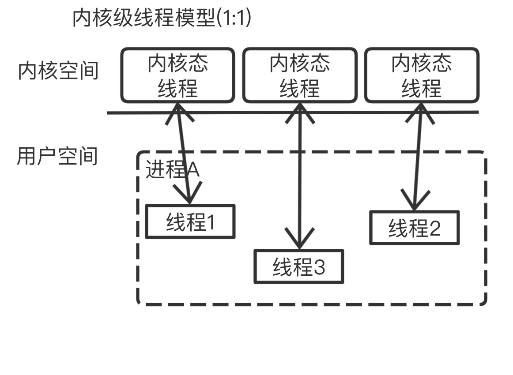
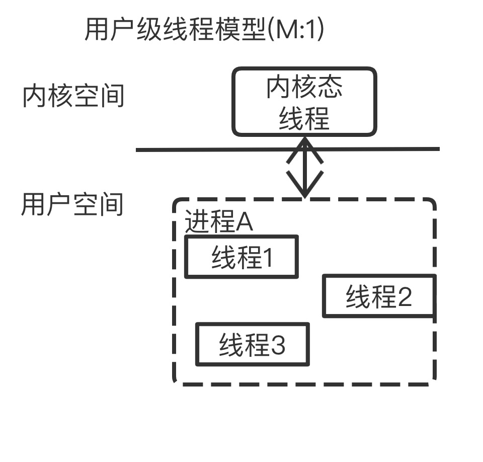
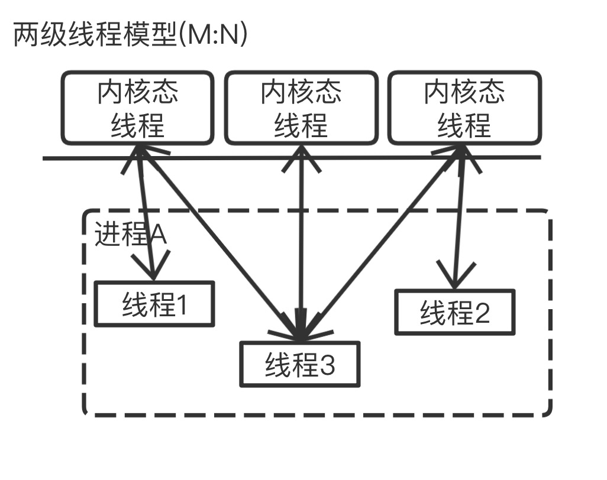
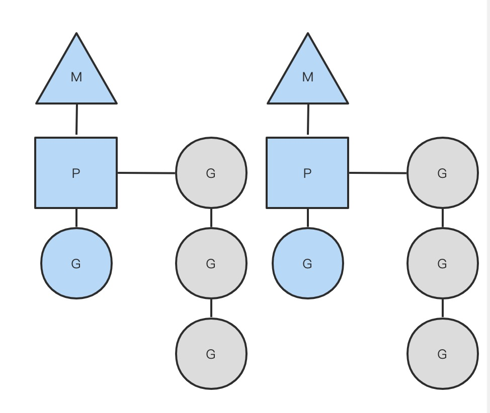
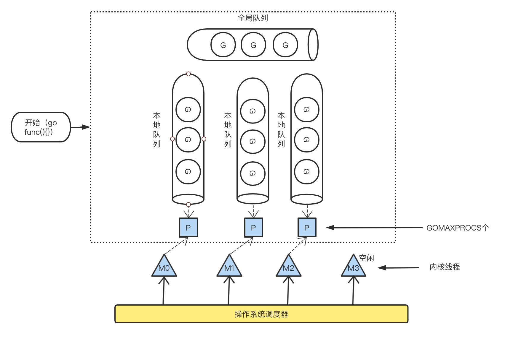

GMP调度模型
Golang的一大特色就是Goroutine。Goroutine是Golang支持高并发的重要保障。Golang可以创建成千上万个Goroutine来处理任务，将这些Goroutine分配、负载、调度到处理器上采用的是G-M-P模型。
前言
随着科技的发展，机器配置越来越高。对了充分利用机器服务器的资源，并发编程变得越来越重要。在开始之前，需要简单的了解一下并发(concurrency)和并行(parallesim)的区别。
并发：有一个任务执行单元，从物理上就只能一个任务、一个任务地执行。在一段时间内有多个程序处于已启动运行到运行完毕之间。但任意时刻只有一个程序在处理机上运行。
并行：有多个任务执行单元，从物理上就可以多个任务一起执行。
进程：CPU在切换程序的时候，如果不保存上一个程序的状态（也就是我们常说的context–上下文），直接切换下一个程序，就会丢失上一个程序的一系列状态，于是引入了进程这个概念，用以划分好程序运行时所需要的资源。因此进程就是一个程序运行时候的所需要的基本资源单位（也可以说是程序运行的一个实体）。
线程：CPU切换多个进程的时候，会花费不少的时间，因为切换进程需要切换到内核态，而每次调度需要内核态都需要读取用户态的数据，进程一旦多起来，CPU调度会消耗一大堆资源，因此引入了线程的概念，线程本身几乎不占有资源，他们共享进程里的资源，内核调度起来不会那么像进程切换那么耗费资源。
协程：协程拥有自己的寄存器上下文和栈。协程调度切换时，将寄存器上下文和栈保存到其他地方，在切回来的时候，恢复先前保存的寄存器上下文和栈。因此，协程能保留上一次调用时的状态（即所有局部状态的一个特定组合），每次过程重入时，就相当于进入上一次调用的状态，换种说法：进入上一次离开时所处逻辑流的位置。线程和进程的操作是由程序触发系统接口，最后的执行者是系统；协程的操作执行者则是用户自身程序，goroutine也是协程。
通常所说的并发编程，其实就是允许多个任务同时执(即在一段时间内执行多个任务，不需要同一时刻被执行)。在单核处理器上，通过多线程共享CPU时间片串行执行(并发非并行)。而并行需要依赖多核处理器。
多线程或多进程是并行的基本条件，但单线程也可以用协程(coroutine)做到并发。简单将Goroutine归纳为协程并不合适，因为它运行时会创建多个线程来执行并发任务，且任务单元可被调度到其它线程执行。这更像是多线程和协程的结合体，能最大限度提升执行效率，发挥多核处理器能力。
线程、协程
为了更好理解Goroutine(可以说为轻量级线程)，现讲一下线程和协程的概念
线程（Thread）：有时被称为轻量级进程(Lightweight Process，LWP），是程序执行流的最小单元。一个标准的线程由线程ID，当前指令指针(PC），寄存器集合和堆栈组成。另外，线程是进程中的一个实体，是被系统独立调度和分派的基本单位，线程自己不拥有系统资源，只拥有一点儿在运行中必不可少的资源，但它可与同属一个进程的其它线程共享进程所拥有的全部资源。
线程拥有自己独立的栈和共享的堆，共享堆，不共享栈，线程的切换一般也由操作系统调度。
协程（coroutine）：又称微线程与子例程（或者称为函数）一样，协程（coroutine）也是一种程序组件。相对子例程而言，协程更为一般和灵活，但在实践中使用没有子例程那样广泛。
和线程类似，共享堆，不共享栈，协程的切换一般由程序员在代码中显式控制。它避免了上下文切换的额外耗费，兼顾了多线程的优点，简化了高并发程序的复杂。
Goroutine和其他语言的协程（coroutine）在使用方式上类似，但从字面意义上来看不同（一个是Goroutine，一个是coroutine），再就是协程是一种协作任务控制机制，在最简单的意义上，协程不是并发的，而Goroutine支持并发的。因此Goroutine可以理解为一种Go语言的协程。同时它可以运行在一个或多个线程上。
在Go语言中编写并发编程程序非常的简单，只需要加上Go 关键字即可。
并发模型
内核级线程
用户进程或者系统进程中的线程的创建、撤消、切换都是在内核空间中实现的，并由内核为其分配线程控制块进行管理。每个用户线程会被映射或者绑定到一个内核线程，形成一对一的线程对应关系，如下图所示，内核可以感知线程的存在，其调度是以线程为基本单位。
用户级线程
用户级线程仅存在于用户空间中，对于这种线程的创建、撤消、线程之间的同步与通信等，无须利用系统调用来实现，也同样无须内核的运行，而是通过中间系统（线程库）在用户空间中来完成。
两级调度模型
这种模型是介于用户级线程模型和内核级线程模型之间的一种线程模型。这种模型的实现非常复杂，和内核级线程模型类似，一个进程中可以对应多个内核级线程，但是进程中的线程不和内核线程一一对应；这种线程模型会先创建多个内核级线程，然后用自身的用户级线程去对应创建的多个内核级线程，自身的用户级线程需要本身程序去调度，内核级的线程交给操作系统内核去调度。
M个用户线程对应N个系统线程，缺点增加了调度器的实现难度。
Go语言的线程模型就是一种特殊的两级线程模型（GPM调度模型）。
调度模型简介
Go语言虽然使用一个Go关键字即可实现并发编程，但Goroutine被调度到后端之后，具体的实现比较复杂。先看看调度器有哪几部分组成。
- G：goroutine，go程序建立的用户线程。主要保存 goroutine 的运行时栈信息（stack结构体）以及 CPU 的一些寄存器的值（gobuf结构体），还有关联的M，全局队列中下个G等信息。
- M：machine 一个
M直接关联一个os内核线程，用于执行G。M会优先从关联的P的本地队列中直接获取待执行的G，它保存了 M 自身使用 的栈信息、当 前正在 M 上执行的 G 信息、与之绑定的 P 信息。 - P：processor 代表了
M所需的上下文环境，也是处理用户级代码逻辑的处理器，可以看作一个局部调度器使go代码在一个线程上跑。 - P列表：在创建程序的时候创建一个
P列表， 最多有$GOMAXPROCS个，这环境变量可以通过操作系统中的环境变量设置，也可以通过Go程序中的runtime.GOMAXPROCS()函数设置，默认为处理器的核心数，它代表了真正的并发度。 - M列表：当前操作系统分配到当前go程序的内核线程数，可以通过go语言中runtime/debug包中的SetMaxThreads函数设置。当有一个
M阻塞，会有一个新的M被创建；当有一个M空闲，会被回收或睡眠。 - P的本地队列：P维护一个runq_用来存放等待执行的goroutine，新创建的
G会优先放在P的本地队列，当本地队列满（256G）时，会放入G的全局队列。 - 全局队列：如果
P的本地队列已满，待执行的G就会放在全局队列中，M会先从关联的P的本地队列中获取待执行的G，没有的话，再到全局队列中获取；如果这里也没有了，就去其他P的本地队列中获取一些任务。
GMP的关系图如下：
以上这个图讲的是两个线程(内核线程)的情况。一个M会对应一个内核线程，一个M也会连接一个上下文P，一个上下文P相当于一个“处理器”，一个上下文连接一个或者多个Goroutine。为了运行goroutine，线程必须保存上下文。
GMP调度模型：
GMP调度流程大致如下：
- 线程M想运行任务就需得获取 P，即与P关联。
- 然从 P 的本地队列(LRQ)获取 G
- 若LRQ中没有可运行的G，M 会尝试从全局队列(GRQ)拿一批G放到P的本地队列，
- 若全局队列也未找到可运行的G时候，M会随机从其他 P 的本地队列偷一半放到自己 P 的本地队列。
- 拿到可运行的G之后，M 运行 G，G 执行之后，M 会从 P 获取下一个 G，不断重复下去。